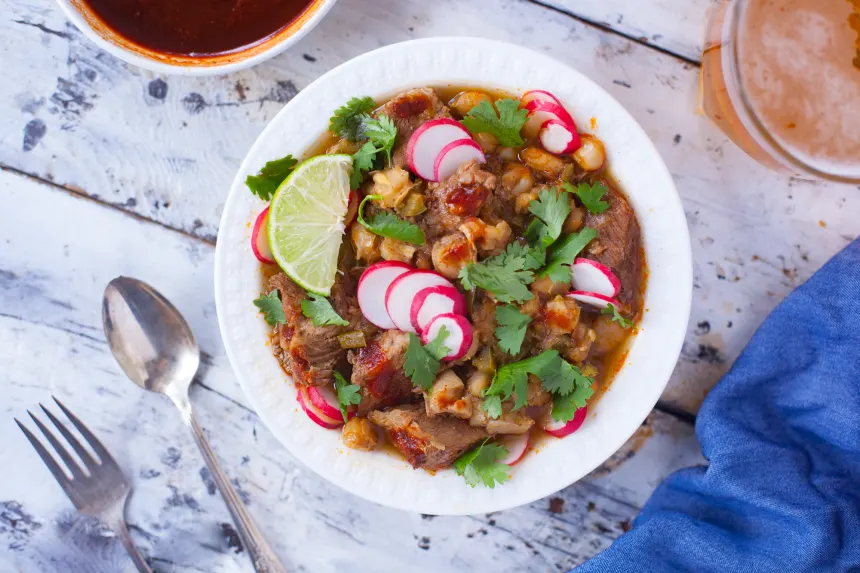

Pozole
Home

Description
This pozole rojo, or "red" pozole, is made with pork shoulder or shanks, red chiles, and lots of hominy corn. Typically just the simple soup with pork and hominy is served, and the add-ins, or garnishes are set at the table for all to pick and put in their soup as they wish.
Ingredients
- 1.5 lbs pork shoulder
- 2 garlic cloves, peeled
- 1 onion, chopped
- 2 garlic cloves, chopped
- 2 tablespoons oil
- 0.5 tsp black pepper
- 0.5 tsp cayenne
- 2 tbsp california chili powder
- 1 tbsp salt
- 0.25 tsp oregano
- 4 cups canned white hominy, drained and rinsed
- 3-5 cups pork broth, from cooking pork shoulder
- 1 cup canned diced green chilis (optional)
- salt
- 2 whole fresh jalapenos, chopped (optional)
- 3 whole ancho chiles, seeded and stemmed (garnish) (optional)
Steps
- Prepare the onion, peel the garlic, chop the onion, peel and chop the 2 garlic cloves, chop the green chilies and jalapenos if you are using them and get the hominy drained and rinsed.
- Boil ancho chilies in a separate small pot for the garnish part(read below).
- Place the meat in a large saucepan and just cover with lightly salted water.
- Add 1/2 chopped onion, the 2 cloves peeled garlic, pepper, cumin, and oregano.
- Bring to a boil over medium heat, skim off any foam that rises, reduce heat, cover and simmer for 45 minutes.
- Remove meat and broth, reserving both.
- Saute the remaining chopped onion and garlic in oil until translucent.
- Add the remaining spices, stir for a minute.
- Cut the reserved pork into 1 inch cubes and add to the pan.
- Stir in the canned hominy, pork broth (if there is not enough pork broth, add chicken stock, I like to add it anyway for flavor, about 2-4 cups, eyeball the amount you like), green chilies and jalapenos (optional).
- Cook at a simmer, covered, for 45 to 60 minutes until the meat and hominy are tender.
- If necessary, cook for up to an additional 60 minutes until the chilies and onions are well blended into the broth.
- Degrease the stew, taste for salt, and serve in soup bowls.